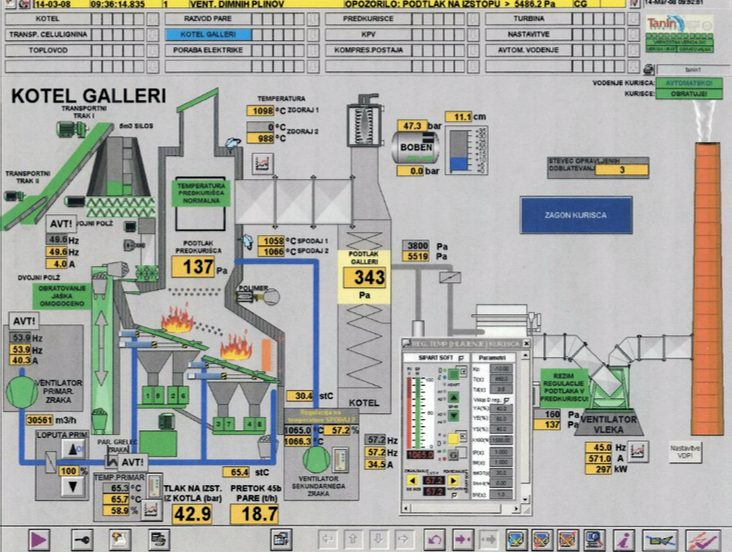
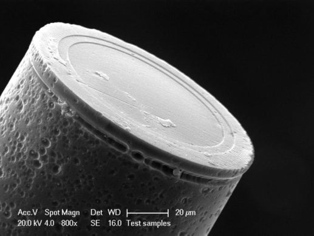
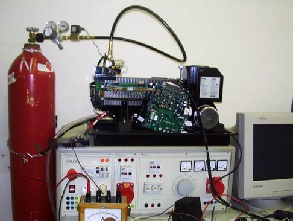
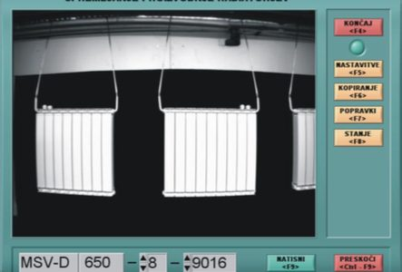

Dve kolesi. Ravnotežje.
Izmeri nagib in sproti popravljaj gibanje.
Univerza v Mariboru · FERI
Kako robot naredi prvi korak?
Kako radar najde dron? Na FERI spoznaš elektroniko in algoritme, ki to omogočajo.
Radar izmeri položaj. Z obdelavo signalov spremljamo, kje je dron in kako se premika.
Satelit opazuje Zemljo z radarjem. SAR je način radarskega slikanja, s katerim spremljamo spremembe površja.
03 / Robotika v gibanju
Kako robot obdrži ravnotežje in naredi naslednji korak? Poveži senzorje, algoritme in motorje.
Poglej, kako deluje ↗Izmeri nagib in sproti popravljaj gibanje.
Načrtuj oporo, premakni težišče in uskladi sklepe.
Poveži zaznavanje in vodenje v usklajeno hojo.
Kaj bi preizkusil ti? V simulaciji napiši algoritem, nato opazuj, kako se odzove robot. Shematski prikaz gibanja.
PODROČJE
Senzor zazna. Algoritem odloči. Motor ukrepa.
Pri študiju jih povežeš v sistem, ki se odziva na svet.
Gibanje, zaznavanje in vodenje robotov.
Avtomatizacija procesov in proizvodnih naprav.
Obdelava radarskih signalov in opazovanje okolja.
OSNOVE AVTOMATIKE
Klikni gradnik in spoznaj njegovo nalogo.
OD MERITVE DO DEJANJA
↻ Izmeri odziv. Popravi dejanje. Ponovi.
·
TO SE NAUČIŠ PRI PREDMETIH
ŠTUDIJ
Primerjaj univerzitetni in visokošolski strokovni program.
Seznam predmetov je povzet po predstavitvenih gradivih Inštituta za avtomatiko. Aktualni predmetnik je objavljen na feri.um.si.
RAZISKAVE IN SODELOVANJE
V Inštitutu za avtomatiko razvijamo senzorje, obdelujemo signale in vodimo procese. To so nekateri primeri našega dela.

Od ročnega upravljanja do avtomatizacije. Modeliranje in mehka regulacija industrijskega procesa.

Merjenje na konici optičnega vlakna. Razvoj senzorja, ki je pripeljal do patenta.

Iz vodika v elektriko. Raziskovanje gorivne celice PEMFC.

Kamera postane merilnik. Nadzor dimenzij radiatorjev v proizvodnji.
INŠTITUT ZA AVTOMATIKO
Najdi področje, ki te zanima. Razvij ga v projekt, diplomo ali magistrsko nalogo.
Svetloba kot merilno orodje. Fotonika, optična vlakna in razvoj senzorjev.
Obišči laboratorij →Procesi pod nadzorom. Industrijski krmilniki, avtomatizacija in pametne zgradbe.
Obišči laboratorij →Iz signalov do informacije. Radarji, strojni vid in vodenje robotov.
Obišči laboratorij →VPIS
Začni s študijem Elektrotehnike na FERI in izberi smer Avtomatika in robotika.
Začneš na Elektrotehniki na UM FERI.
Matematika, fizika in elektrotehnika v prvih treh semestrih.
V 4. semestru izbereš svojo smer.
Nadaljuješ z avtomatiko, robotiko in vgrajenimi sistemi.